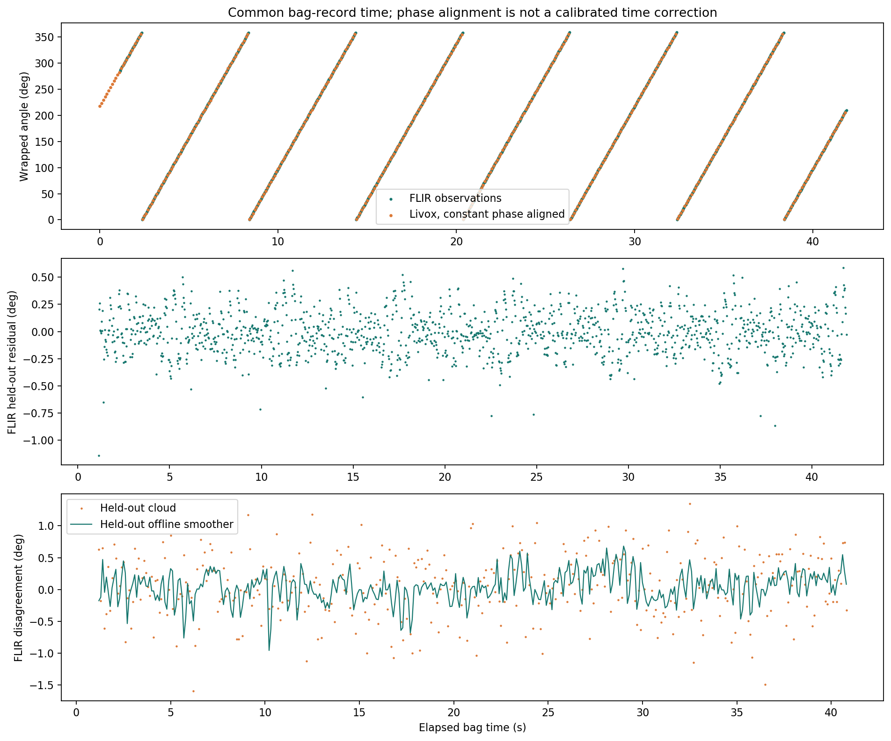
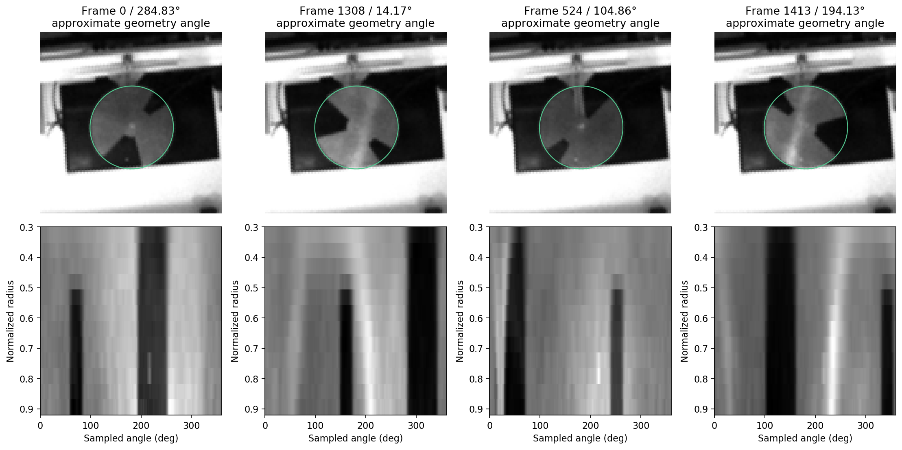
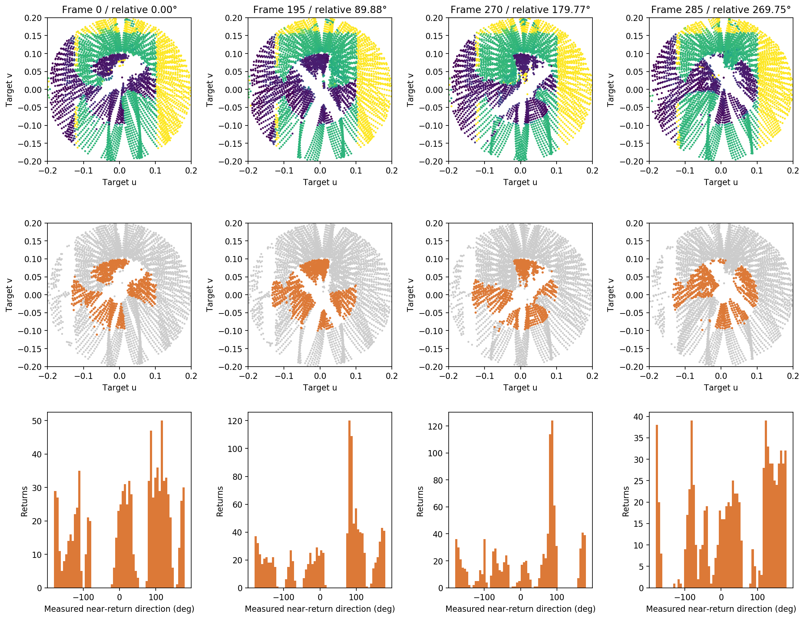
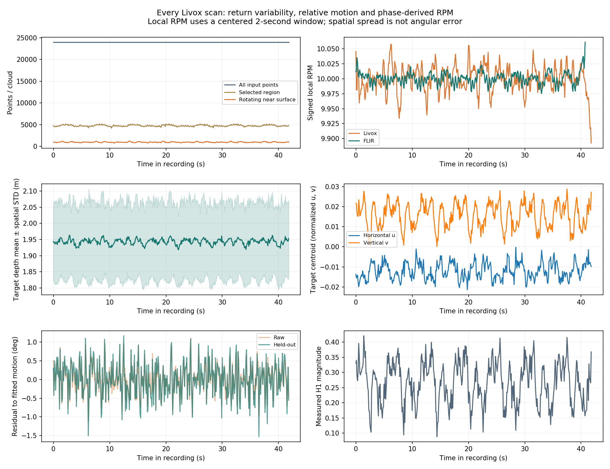
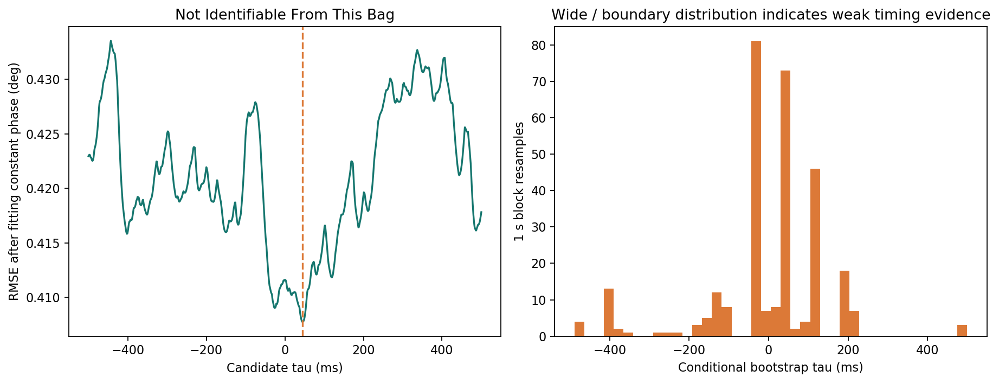
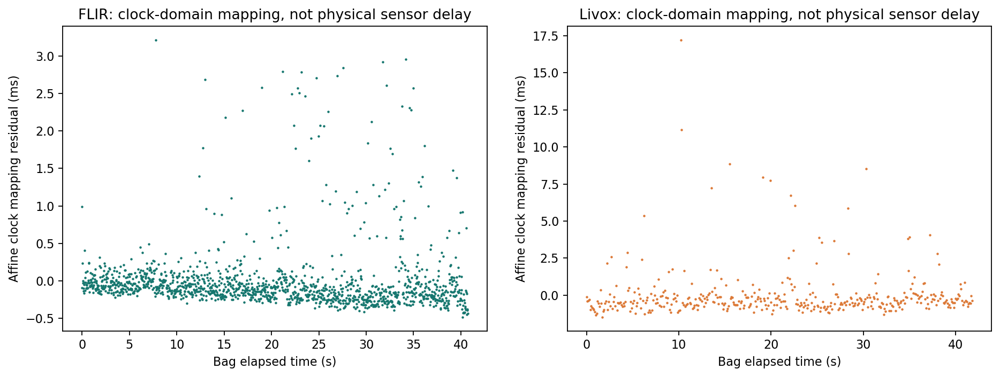
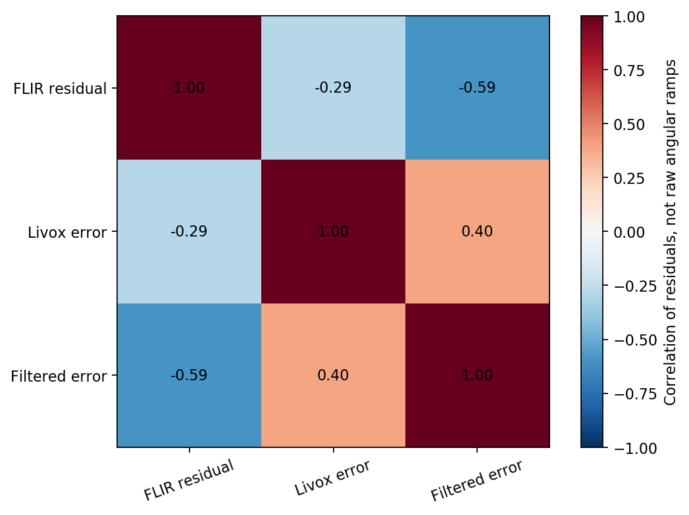
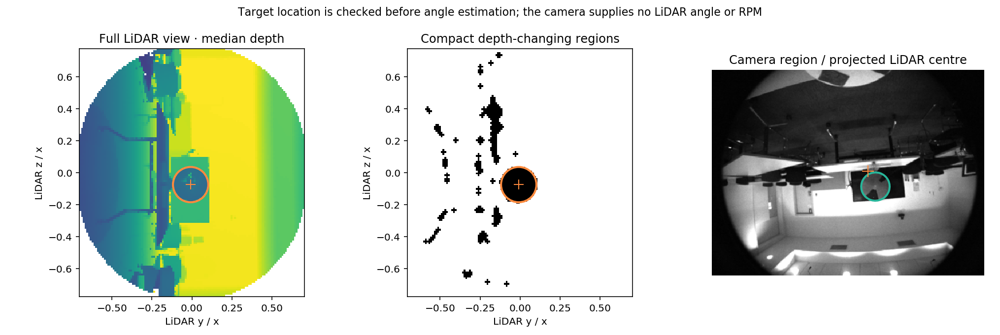

# Livox / FLIR processing report
Bag: `rig_20260828_191845_0.bag`. Selected camera topic: `/camera/image_raw`. Selected Livox topic: `/livox/lidar`.
Run ID: `batch_device_1_20261007T064645Z_f2b206cc/captures/rig_20260828_191845_0_fdf142b5`. Setup group: `normal`.
## Detection results
| Quantity | FLIR | Livox |
|---|---:|---:|
| Recorded observations | 1423 | 419 |
| Independently estimated signed RPM | +9.999672 | +10.000187 |
| Held-out residual STD to training motion, degrees | 0.2013 | 0.4653 |
| Branch boundary detections rejected | 0 | 0 |
| Held-out branch boundary detections | 0 | 0 |
Livox agreement with new FLIR observations, after one constant phase calibration on the first half of common recording time:
| Metric | Held-out raw clouds | Held-out offline filtered clouds |
|---|---:|---:|
| STD, degrees | 0.4916 | 0.2396 |
| MAE, degrees | 0.3964 | 0.1884 |
| RMSE, degrees | 0.4941 | 0.2425 |
| P95 absolute disagreement, degrees | 0.9577 | 0.4791 |
The Livox 21-cloud smoother spans 2.000 s and uses approximately 1.000 s of future data. Raw, offline-filtered and batch-trajectory angles are separately exported. No encoder reference exists; these statistics describe repeatability and cross-modal agreement, not absolute angle accuracy. Camera physical zero is only approximately geometry anchored; Livox physical zero remains uncalibrated.
## Every-scan variability
All 419 recorded Livox clouds were decoded, containing 10,056,000 input points. Target-return count: mean 956.5, STD 85.8 per scan. Livox local phase-derived RPM STD: 0.02258. FLIR local phase-derived RPM STD: 0.00989.
`scans/scan_metrics.csv` contains every scan's original/central/target point counts, depth mean and spatial spread, centroid, relative angles, held-out motion residuals, quality flags and local RPM. Local RPM is a centered 2-second phase slope using up to one second of future data; its variability includes estimation noise and periodic-model effects. It is not an independent measurement of mechanical speed fluctuation. Spatial point-depth spread is not angular error. Full raw clouds remain in the source bag; motion inference uses measured returns in the rotating target region.
## Timestamp analysis
**Status: NOT_IDENTIFIABLE_FROM_THIS_BAG**. Constant-rate motion and an unknown sensor phase are confounded. The fitted minimum is a conditional candidate, not a measured physical offset.
The conditional profile minimum is +45.0 ms. The phase-profile 95% range is [-32.0, +55.0] ms; the 1 s block-bootstrap range is [-405.0, +212.5] ms. These intervals are conditional on the fitted observation model; they do not remove systematic scan/exposure/phase uncertainty.
The model is `theta_livox(t_bag) = phase + theta_flir(t_bag + tau); positive tau means Livox content leads FLIR on bag time.`. A free constant phase is fitted for every candidate time shift. The apparent time-shift minimum must **not** be reported as the actual sensor offset when status is NOT_IDENTIFIABLE_FROM_THIS_BAG. The app displays physical offset as unresolved in that case.
Camera nonconstant-motion scatter is 0.1815°, versus estimated camera observation scatter 0.2013°. Effective samples: 323.0. RMSE at zero time shift: 0.4116°; RMSE at the conditional minimum: 0.4077°.
FLIR header-clock domain: `unix_epoch`. Livox header-clock domain: `device_or_other_epoch`. Clock/header differences and affine mappings are in `timing/clock_metrics.csv`. Device uptime cannot be subtracted from Unix time to obtain a physical offset. The affine mapping residual is recording-clock behavior, not exposure-to-ray delay.
Cross-speed timing is available after processing multiple distinct bags. New-scene target-centred runs use the empirical H1 convention modulo 360°. Exact SHA256-verified known-rig inputs preserve their original H5/3 convention modulo 120° from the original sensor-coordinate rays, independently of target-centred angle tracking. Different conventions cannot be mixed; independently learned template time-zero phases are not compared directly. A stable phase within each setup group remains an assumption. Different signed speeds within shared groups are required; the comparison reports confidence bounds and setup-dependent systematic risk. The previous −66.7 ms candidate is not reused or assumed.
## Algorithms and validation
FLIR: grayscale subpixel polar sampling, 12 radial rings, 12 spatial orders, 24-component appearance representation, 32-order periodic template, and continuous per-image phase registration. Camera-header time is used when valid; bag time is the fallback. The camera uses its own data only.
Livox: real measured returns from the automatically localized region (or explicitly selected reference fixed region), four depth bands, four radial weight windows, angular harmonics 0–10 (336 features), 48-component representation, 12-order periodic template, regularized correlated-noise precision and generalized-least-squares rate refinement. Directions for missing returns are never invented. The Livox angle estimator accepts no camera angle or RPM observations; optional camera geometry guides localization only.
The estimators infer RPM from data; commanded 5/10/15 RPM values are not supplied. Estimated RPM calibrates the periodic appearance model and initializes a ±40° camera / ±20° Livox phase search. Observations determine the registration within that branch. These offline models assume repeated, approximately constant-speed motion in a fixed scene and are not validated for abrupt reversals.
Five-fold held-out validation and a chronological first-60%/last-40% test are saved. Automatic LiDAR localization uses discovery samples across the whole recording; these angle metrics are conditional on that shared ROI, not a fully held-out test of localization. Camera ellipse calibration and template fitting use training images only. Livox holds out 2 s blocks and purges the smoothing half-window around test observations. Parameters were developed on these hardware recordings; this is internal validation, not a benchmark on unseen rigs.
## Saved artifacts
- `metadata.json`, `request.json`, `summary.json`, `metrics.csv`: acquisition, settings, provenance and final metrics.
- `flir/angles.csv`, `livox/angles.csv`: all observations with bag and header timestamps, quality flags and separate output types.
- `flir/model.npz`, `livox/model.npz`, `validation_model_*.npz`: final and held-out appearance models.
- `flir/features.npz`, `livox/features.npz`: all measured feature/signature intermediates.
- `intermediates/camera_extracted.npz`, `livox_extracted.npz`: every extracted crop and measured selected-region ray used by the algorithms. Full source observations remain in `bagfiles/device_1/rig_20260828_191845_0.bag`.
- `scans/scan_metrics.csv`, `camera_local_rpm.csv`, `summary.json`: every Livox scan's statistics, independent local RPM traces and variability summaries.
- `intermediates/*detection*`: selected annotated crops, measured cloud arrays and masks. Full camera example images are also saved.
- `timing/paired_detections.csv`, `lag_profile.csv`, `bootstrap_lags.csv`, `summary.json`: all timing calculations and diagnostics.
- `timing/error_covariance_deg2.csv`, `error_correlation.csv`: residual matrices, not misleading correlations of angular ramps.
- `figures/*.png`: detection stages, angle traces, residual distributions, clock plots, lag profile, bootstrap distribution and error matrix.
- `live/*.png`, `progress.jsonl`, `status.json`, `worker.log`: processing previews and execution trace.
Every run has its own folder; reprocessing creates a fresh run and preserves earlier results. Original captures and pre-existing algorithms are untouched.
## Automatic target localization
Selected method: **camera_guided**. Geometry: `{"center_uv": [-0.00811737147602365, -0.07529087492031983], "radius_uv": 0.11048064222888157, "depth_bounds_m": [1.7449640555381776, 2.7624000370502473], "foreground_depth_m": 1.8967000603675843, "background_depth_m": 3.6281000137329102, "circularity": 0.8586385424114693, "angular_coordinate_system": "target-centred y/x, z/x; radius scaled to 0.10", "score_shape": 0.8586385424114693, "discovery_rpm": 9.99729130143551, "discovery_coherence": 0.5686577629343594, "camera_prior_distance_px": 30.478712765108526, "projected_center_px": [276.80690852375346, 179.88599080866248], "selection_score": 0.36524708471900014}`.
- camera_guided: selected — Compact moving envelope and coherent independent LiDAR rotation verified.
Coarse camera geometry is optional; periodic LiDAR evidence selects the target. Geometry was learned using the full discovery sequence, so downstream validation is conditional on this ROI.
Projected centre differs from the detected image centre by 30.5 px. Calibration is a coarse prior; confirm pose and enclosure state.
The camera supplies a spatial prior only; LiDAR angle and RPM remain independently inferred. `localization/` saves sampled full-scene rays, depth maps, decision history, calibration snapshot and figure. Original metre depth is preserved; exported angular coordinates are target-centred and radius-normalized.







